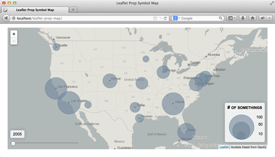

Tutorials
Time Series Proportional Symbol Maps with Leaflet and JQuery
This tutorial describes how to make a time series proportional symbol map using the Leaflet and jQuery code libraries. The tutorial is based on a laboratory assignment created in Spring of 2013 for an advanced class on Interactive Cartography and Geovisualization at the University of Wisconsin-Madison.
- Download the full source code for the Time Series Proportional Symbol Maps with Leaflet and JQuery (zip)